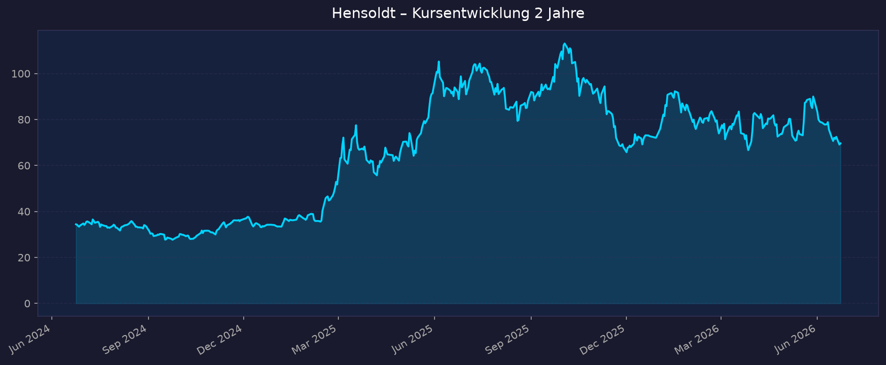
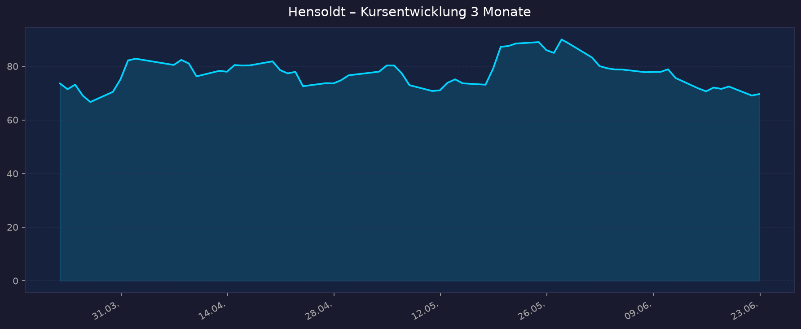

Sensorik-Reinwert der EU-Aufrüstung, ursprünglich erwarteter Ausbruch ~70→81 €, Auftragsbestand 9,8 Mrd €, Ziel 2030 ~6 Mrd € Umsatz. Hinweis Datenstand: Die Ausbruchs-These ist überholt — der Kurs ist nach dem Oktober-2025-Hoch (117,82 €) auf ~70 € zurückgekommen. Aktuell eher Konsolidierung/Rücksetzer als Ausbruch.
📈 1. Kursentwicklung
Aktueller Kurs: 69,64 EUR | Veränderung heute: +0,8 % (Vortag 69,10 €) | Realtime-Quelle nannte −3,7 % im Tagesverlauf — Tag volatil.
Chart – 2 Jahre

Chart – 3 Monate

| Zeitraum | Kurs Start | Kurs Ende | Veränderung |
|---|---|---|---|
| 2 Jahre | 34,41 € (24.06.2024) | 69,64 € | +102 % |
| 3 Monate | 73,59 € | 69,64 € | −5,4 % |
| 52-Wochen-Hoch | — | 117,70 € (Okt. 2025) | — |
| 52-Wochen-Tief | — | 64,80 € | — |
Einordnung: Über 2 Jahre verdoppelt, aber vom Hoch (~118 €) rund −41 % korrigiert. Letzte 30 Tage ca. −22 % trotz positiver Unternehmensmeldungen — klare Diskrepanz zwischen Fundamentaldaten und Marktstimmung. Interaktiver Chart: https://www.tradingview.com/symbols/XETR-HAG/
💹 2. KGV-Entwicklung (Kurs-Gewinn-Verhältnis)
Aktuelles KGV (trailing): ~80 (yfinance) bzw. bis 115 (companiesmarketcap, je nach EPS-Basis) | Forward-KGV: ~30 (yfinance) bis ~47–48 (andere Quellen, je nach Schätzbasis)
| Zeitraum | KGV | Einordnung |
|---|---|---|
| Aktuell (trailing) | ~80–115 | sehr hoch, da EBIT-Marge Q1 noch niedrig (Saisonalität) |
| Forward 2026 | ~30–48 | hoch, aber durch Margenhochlauf fallend |
| Ende 2024 | ~37 | Ausgangsbasis vor Bewertungsexpansion |
| vor 12 Monaten | nicht eindeutig verfügbar | — |
| vor 24 Monaten | nicht verfügbar | — |
Bewertung: Hohe Wachstumsbewertung. Das trailing-KGV ist durch geringe Q1-EBIT-Marge (2,3 %) verzerrt; relevanter ist das Forward-KGV, das mit dem geplanten Margenanstieg (FY-EBITDA-Marge 18,5–19 %) deutlich sinkt. Im historischen Vergleich kein Schnäppchen — der Markt preist starkes Gewinnwachstum bereits ein.
💰 3. Sales Multiple (Kurs-Umsatz-Verhältnis / P/S)
Aktuelles P/S-Verhältnis: ~2,7–3,1 (yfinance 3,15; companiesmarketcap 2,70)
| Zeitraum | P/S Ratio | Einordnung |
|---|---|---|
| Aktuell | ~2,7–3,1 | nach Kursrückgang deutlich entspannt |
| Ende 2026 (Schätzung) | ~3,55–3,78 | je nach Quelle |
| vor 12 Monaten | nicht eindeutig verfügbar | — |
| vor 24 Monaten | nicht verfügbar | — |
Trend: Fallend — der Kursrückgang von ~118 € auf ~70 € hat das P/S spürbar reduziert. Für ein margenstarkes Defense-Elektronikunternehmen mit zweistelligem Umsatzwachstum ist ~3x P/S moderat (deutlich unter z. B. Rheinmetall in Hochphasen).
📊 4. Handelsvolumen (Trading Volume)
| Zeitraum | Ø Tagesvolumen | Auffälligkeiten |
|---|---|---|
| 3-Monats-Durchschnitt | ~427.500 Aktien | — |
| 2-Jahres-Durchschnitt | ~430.000 Aktien (avg. Volume yfinance) | — |
| Volumen-Peak (2J) | nicht exakt verfügbar | typisch um Quartalszahlen / Index-Ereignisse |
Volumentrend: Stabil auf erhöhtem Niveau. Erhöhte Aktivität rund um Index-Anpassung (Ausscheiden aus einem STOXX-Index gemeldet) und Analysten-Downgrades.
🏦 5. Insider Trades (letzte 2 Jahre)
| Datum | Name | Funktion | Kauf/Verkauf | Anzahl Aktien | Wert |
|---|---|---|---|---|---|
| 11.08.2025 | Oliver Dörre | CEO | Kauf | 1.500 | ~120.750 € (80,50 €/Stk) |
| 13.08.2025 | Christian Ladurner | CFO | Kauf | ~545 | ~47.660 € (87,45 €/Stk) |
| Anfang 2026 | Oliver Dörre | CEO | Kauf | 1.000 | ~75.250 € (75,25 €/Stk) |
3-Monats-Überblick: Netto-Käufe (keine wesentlichen Insider-Verkäufe gemeldet). 2-Jahres-Überblick: Deutlich kaufgeprägt — CEO und CFO stockten mehrfach eigene Anteile auf, zuletzt auch nach dem Kursrückgang Anfang 2026. Vertrag des CEO Dörre vorzeitig bis Ende 2031 verlängert. Positives Signal des Managements.
Quelle: EQS Directors' Dealings / 4investors / finanzen.net. Vollständige BaFin-Einzelliste nicht abschließend abgerufen.
🩳 6. Short-Positionen
Aktuelle Short Quote: ca. 3,3 % (zuletzt mehr als verdoppelt) — als Reaktion auf die ambitionierte Bewertung gewertet.
| Zeitraum | Short Interest | Veränderung |
|---|---|---|
| Aktuell | ~3,28 % | gestiegen (mehr als verdoppelt) |
| Größte Einzelposition | AQR Capital ~1,89 % | leicht rückläufig (von 1,99 %) |
| Weitere | Caisse de dépôt Québec ~0,47 % | rückläufig (von 0,55 %) |
Einschätzung: Moderat-erhöht. 3,3 % Short-Quote ist für einen volatilen Wachstumswert kein Alarmsignal, aber der Anstieg signalisiert Skepsis an der hohen Bewertung. Bei positiven Überraschungen besteht ein gewisses Short-Squeeze-Potenzial. Quelle: Bundesanzeiger/4investors, best effort.
🗞️ 7. Aktuelle Nachrichten
| Datum | Quelle | Nachricht | Relevanz |
|---|---|---|---|
| Q1 2026 | hensoldt.net | Rekord-Auftragseingang 1,48 Mrd € (+111 %), Book-to-Bill 3,0x | Hoch |
| Q1 2026 | quartr/IR | Auftragsbestand 9,8 Mrd € (+41 %), Umsatz 496 Mio € (+26 %) | Hoch |
| Anfang Juni 2026 | capital.com | Free-Cashflow-Prognose angehoben: ~50 % statt 40 % des bereinigten EBITDA | Hoch |
| Mai/Jun 2026 | finanztrends | Aktie −22 % in 30 Tagen trotz guter News | Hoch |
| Juni 2026 | Stuttgarter Ztg | JPMorgan-Downgrade auf "Neutral", Kursziel 110→100 € | Hoch |
| Juni 2026 | goldesel/Jefferies | Jefferies: Wachstum konzentriert sich auf spätere Jahre | Mittel |
| Juni 2026 | kapitalmarktexperten | Ausscheiden aus einem STOXX-Index | Mittel |
| Mai 2026 | aktienwelt360 | "Sensor-Spezialist Hensoldt bessere Wahl als Rheinmetall" | Mittel |
| 2026 | boerse.de | Ø Analysten-Kursziel ~90,8–93,1 €, Deutsche Bank fair value 101 € | Hoch |
| 31.07.2026 | IR-Termin | Halbjahreszahlen H1 2026 erwartet | Mittel |
Sentiment: Gemischt — operativ stark (Rekordaufträge, Margenhochlauf, FCF-Anhebung), aber Kursdynamik negativ durch Analysten-Downgrades und Sorge, dass das Wachstum erst in späteren Jahren voll durchschlägt. Analysten sehen im Schnitt dennoch ~30 % Aufwärtspotenzial.
📋 8. Letzte 3 Quartalsberichte
Q1 2026
| Kennzahl | Ist | Erwartung | Abweichung |
|---|---|---|---|
| Umsatz | 496 Mio € (+26 % YoY) | leichter Miss gemeldet | knapp unter Erwartung |
| Auftragseingang | 1.483 Mio € (+111 %) | über Erwartung | stark positiv |
| Auftragsbestand | 9.801 Mio € (+41 %) | Rekord | positiv |
| Adj. EBITDA | 44 Mio € (Marge 8,9 %) | — | +46,7 % YoY |
| Adj. EBIT | 12 Mio € (Marge 2,3 %) | — | Saisonal niedrig |
Guidance (FY 2026): Umsatz ~2.750 Mio €, adj. EBITDA-Marge 18,5–19,0 %, Net Leverage 1,5–2,0x, Dividende 30–40 % des bereinigten Nettoergebnisses, Auftragseingang 4.125–5.500 Mio €. Kursreaktion: Negativ trotz Rekordaufträgen — Umsatz-Miss und Bewertungssorgen dominierten.
Q3 2025 (9-Monats-Stand)
| Kennzahl | Ist | Erwartung | Abweichung |
|---|---|---|---|
| Umsatz (9M) | ~1,5 Mrd € | — | solide |
| Auftragseingang (9M) | >2 Mrd € (+9 %) | — | positiv |
| Adj. EBITDA (9M) | 211 Mio € (Marge 13,7 %) | — | — |
| Auftragsbestand | 7,1 Mrd € (Rekord) | — | positiv |
| EPS Q3 | übertraf Prognose um ~80 % | — | stark positiv |
Guidance: Strukturwachstumspfad bestätigt. Kursreaktion: Überwiegend positiv (EPS-Beat).
Geschäftsjahr 2025 (Gesamtjahr)
| Kennzahl | Ist | Vorjahr | Abweichung |
|---|---|---|---|
| Umsatz | 2.455 Mio € | 2.240 Mio € | +~10 % |
| Adj. EBITDA | 452 Mio € (Marge 18,4 %) | 405 Mio € | über Prognose (≥18 %) |
| Auftragseingang | 4.710 Mio € | 2.904 Mio € | +62 % |
| Auftragsbestand | 8.833 Mio € | 6.644 Mio € | +33 % |
Guidance: Bestätigung des strukturellen Wachstumspfads, Ausbau Richtung Mittelfristziele (Ziel 2030 ~6 Mrd € Umsatz). Kursreaktion: Verhalten — gute Zahlen, aber Markt fokussierte auf Bewertung.
🌍 9. Marktkontext & Wettbewerb
Markt / Branche: Defense-Elektronik / Sensorik & Optronik (GICS Industrials, Defense). Hensoldt liefert die "Augen und Ohren" moderner Waffensysteme (Radar, Optronik, elektronische Kampfführung) — z. B. für Eurofighter, Leopard 2. Treiber ist die strukturelle EU-Aufrüstung (NATO-Ziele, beschleunigte deutsche Beschaffung), die zu Rekordaufträgen führt.
| Wettbewerber | Stärke | Schwäche |
|---|---|---|
| Rheinmetall | Systemführer, Munition, Skalierung, hohe Sichtbarkeit | weniger Sensorik-Reinwert, teils noch höher bewertet |
| Thales (FR) | breites Defense-/Elektronikportfolio, global | weniger fokussiert auf DE-Beschaffung |
| Leonardo (IT) | Elektronik/Avionik, europäische Größe | komplexerer Konzern, staatlicher Einfluss |
| Saab (SE) | Radar/Sensorik direkter Wettbewerber, Gripen | kleiner in DE-Heimatmarkt |
Branchentrends: (1) Strukturell steigende Verteidigungsausgaben in Europa, beschleunigte Beschaffung in Deutschland (höhere Kundenanzahlungen → besserer FCF). (2) Verschiebung von Plattformen zu Sensorik/Elektronik/Software. (3) Hohe Book-to-Bill-Ratios sichern mehrjährige Umsatzbasis.
Marktposition: Führender europäischer Sensorik-/Optronik-Spezialist mit klarem "Pure-Play"-Profil auf Defense-Elektronik — attraktiveres Risiko-Rendite-Profil als breitere Systemanbieter laut Teilen der Analysten.
Risiken aus dem Marktumfeld: Budget-Zyklen und politische Abhängigkeit (Beschaffung kann sich verschieben), hohe Wachstumsbewertung mit Korrekturanfälligkeit (gezeigt durch −41 % vom Hoch), Wachstum konzentriert sich laut Jefferies auf spätere Jahre (kurzfristige Margenenttäuschung möglich), Verschuldung (Debt/Equity ~167 %).
📝 Gesamteinschätzung
Stärken:
- Rekord-Auftragsbestand 9,8 Mrd € + Book-to-Bill 3,0x → mehrjährige Umsatzvisibilität
- Strukturelle Rückenwinde der EU-/DE-Aufrüstung als reiner Sensorik-Profiteur
- Margenhochlauf (FY-EBITDA-Marge 18,5–19 %) und angehobene FCF-Prognose (~50 % des EBITDA)
- Insider-Käufe von CEO und CFO signalisieren Management-Vertrauen
- Nach −41 % vom Hoch deutlich entspanntere Bewertung (P/S ~3x)
Risiken:
- Sehr hohe Wachstumsbewertung (Forward-KGV ~30–48), Markt preist viel ein
- Negative Kursdynamik (−22 % in 30 Tagen), Analysten-Downgrades (JPMorgan auf Neutral)
- Wachstum/Margen "back-end-loaded" — kurzfristige Enttäuschungen möglich
- Abhängigkeit von politischen Budget-Zyklen
- Erhöhte Verschuldung (Debt/Equity ~167 %), gestiegene Short-Quote (~3,3 %)
Fazit: Hensoldt ist operativ ein Top-Profiteur der europäischen Aufrüstung mit Rekordauftragsbestand und intaktem Margenhochlauf. Die ursprüngliche Ausbruchsthese (70→81 €) ist jedoch überholt — die Aktie hat sich vom Oktober-Hoch deutlich entfernt und befindet sich in einer Korrektur, getrieben von Bewertungssorgen und Analysten-Downgrades. Aggressives Wachstumsprofil mit substanziellem Aufwärtspotenzial (Analysten-Ziel ~90 €), aber hoher Volatilität und Bewertungsrisiko.
🎯 Ranking-Einordnung
Bewertung nach 5 Kriterien (Punkte 1–10)
| Kriterium | Gewicht | Punkte | Begründung |
|---|---|---|---|
| Wachstum / Auftragslage | 25 % | 9 | Book-to-Bill 3,0x, Auftragsbestand 9,8 Mrd €, +26 % Umsatz |
| Profitabilität / Margenhochlauf | 25 % | 7 | FY-EBITDA-Marge 18,4 %, Hochlauf geplant, Q1 saisonal schwach |
| Bewertung | 20 % | 4 | Forward-KGV ~30–48 hoch, P/S ~3x moderat — gemischt |
| Markt-/Wettbewerbsposition | 15 % | 8 | Führender EU-Sensorik-Pure-Play, struktureller Rückenwind |
| Momentum / Sentiment | 15 % | 4 | −22 % in 30 Tagen, Downgrades, gestiegene Shorts |
Gewichteter Gesamt-Score: (9×0,25)+(7×0,25)+(4×0,20)+(8×0,15)+(4×0,15) = 2,25 + 1,75 + 0,80 + 1,20 + 0,60 = 6,6 / 10
Szenarien 2031 (Horizont ~5 Jahre, Basis 69,64 €)
| Szenario | Annahme | Kursziel 2031 | Potenzial |
|---|---|---|---|
| 🐻 Bär | Budget-Zyklen drehen, Margenziele verfehlt, Bewertung komprimiert | ~55 € | −21 % |
| 📊 Base | Mittelfristziele (~6 Mrd € Umsatz 2030) weitgehend erreicht, Margen ~19 % | ~120 € | +72 % |
| 🚀 Bull | Aufrüstung übertrifft Erwartungen, Margen >20 %, Bewertungsausweitung | ~180 € | +158 % |
5-Jahres-Potenzial: ca. −21 % bis +158 %
Diese Analyse ist keine Anlageberatung, sondern eine rein informative Auswertung öffentlich verfügbarer Daten. Kurse in EUR. Aktieninvestments sind mit Risiken bis zum Totalverlust verbunden. Eigene Recherche und ggf. professionelle Beratung erforderlich.
Datenquellen: Yahoo Finance (yfinance) · companiesmarketcap · hensoldt.net IR · quartr · finanzen.net · capital.com · EQS Directors' Dealings · 4investors · Bundesanzeiger · Stuttgarter Zeitung · MarketScreener · Simply Wall St
Teil der Shortlist: 00_Momentum-Aktien USA-EU-Asien – 5-Jahres-Shortlist 2026-06-23